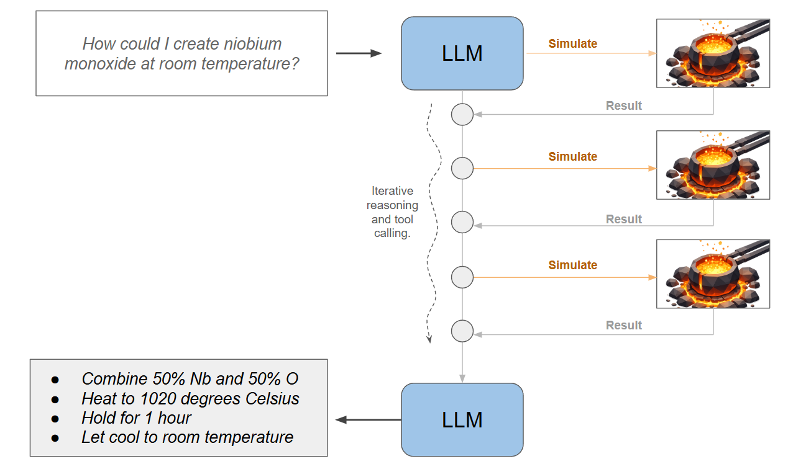
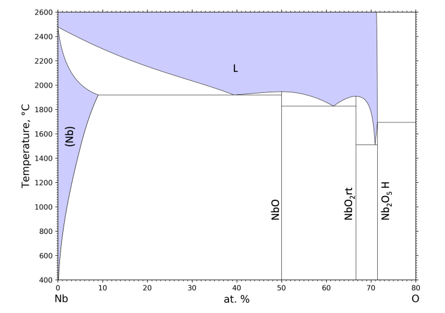
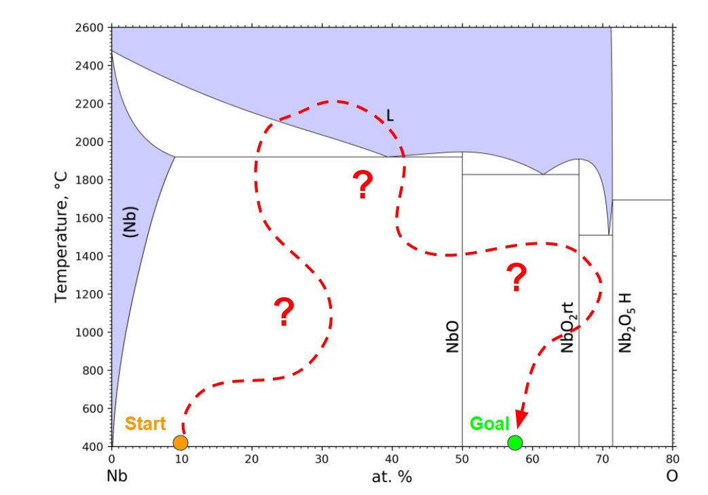
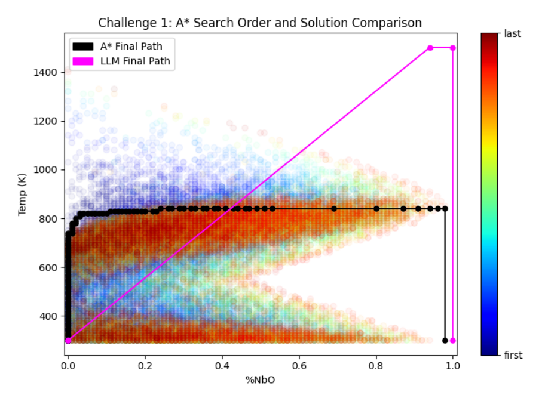
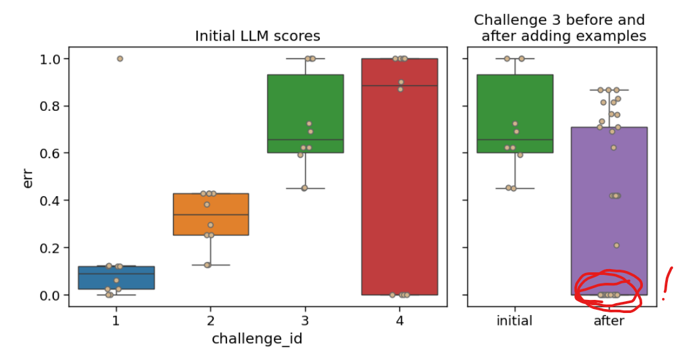

LLMs, MatSci, NeurIPS 2025
Coupling GPT with Materials Synthesis Simulation
The Return of the Blog
It has been almost a year since I have posted anything here, partially through neglect but primarily because a lot of things I would like to post on this blog (robots, VLAs, etc) are closely tied to my work at APL. So because of IP agreements, public release red tape, blah blah blah, that makes it hard to post on the internet. So for now, I am going to try resuming this blog with a combination of things that have been approved for public release, and some more philosophical posts about AI and tech.
For something concrete to start things off: I had a workshop paper at NeurIPS last December, so I thought I would document it here and discuss some interesting aspects of the work. We explored a problem that appears deceptively simple at first, and ends up being really hard to solve well. It also provided some insight as to how AI might impact fields beyond software engineering.
For reference, the full paper is: Coupling Language Models with Physics-based Simulation for Synthesis of Inorganic Materials.
LLMs + Materials Synthesis Simulation
My specific work at NeurIPS concerned the application of LLMs to materials synthesis: to what degree could an LLM understand or recommend a process for making a target material? A material here means a combination of certain elements in some desired ratio and with some desired structure (a "phase"). The critical piece is not just predicting that a material exists or that it would have some structure, but actually articulating how to achieve that structure in practice. What steps of heating, cooling, and mixing need to be taken, over what durations of time, to actually get the material to physically form? This is the problem of material synthesis.
This is a problem domain that was (and still is) very foreign to me, but served as a great driver in thinking about how AI might have impact beyond work done on a computer. We have in one hand an LLM, which is fantastic at manipulating strings and code on a machine. In the other, a physical lab space where you need to melt things together and let them cool to form a tangible solid mass of material. And for all the hype surrounding AI, it is pretty difficult to figure out exactly how to link these two systems together.
In this exploratory study, the approach was to take the lab and put it on the machine, i.e. build a simulation of what happens when materials mix and heat and cool, and expose that to the LLM as an external tool. No actual heating and cooling involved. The question posed to the LLM is: given a known set of elements and some target combination of them, in some structure (a phase), can the LLM drive the simulation a few times and determine a viable set of steps to form the material?

The Problem Up Close
This problem is very interesting from the computer science perspective, with or without the LLM involved. The simulator essentially exposes a huge space of possible things to do, and you have to figure out which things to execute, in which order, to achieve the goal. If like me you have an RL background, this is immediately recognizable as a sort of "gym environment for material synthesis": what actions need to be taken to achieve the desired end state?
To be formal, we are given a set of elements that we can mix, heat, and cool. In our experiments we used niobium and oxygen, which form different compounds based on the following phase diagram:

This diagram only shows major transition points where phases start or stop forming, given by the solid black lines. Most points in this space actually have two or more phases that co-exist! At high temperatures, the purple region (L) notes that we have liquid (molten) material.
Our simulator will essentially track a blob of material that lies somewhere in this space, including all the fractional phases that have formed. As we change the amount of each element or change the temperature, the simulator will make sure we know what is actually formed at any point in time.
This information will be our "state" at any one instant: a representation of what materials and phases currently exist in our simulated crucible of niobium-oxygen goo. This can be described in just a few numbers: the fractions of niobium and oxygen, the temperature, and the fractional amounts of each possible phase that exist. For Nb and O this is only nine possible phases, so our entire state is 12 numbers.
Our actions are even simpler: to (1) sprinkle in X amount of a raw element, (2) to heat our material up, (3) to cool our material down, or (4) to hold at the current temperature for some amount of time. We could make these continuous and specify how much material to add or what temperature to set, or just discretize them into a few options that make fixed-size adjustments.
The objective is to have some starting state, and find a sequence of actions that reach some goal state. Typically, the start and goal are both at room temperature (not even on the diagram), because we want to handle the resulting material at the end.

Is this easy?
We have an environment that is defined by only a few floats for states and actions. It is fully deterministic, and the set of start states is really small (some ratio of Nb and O at room temperature). Some very brute force techniques are even worth considering. Can we search through the space manually? Can we just optimize a sequence of N actions? Could we just enumerate some discretized grid of all possible states and go from there?
The answer turns out to be: not really.
It is really intuitive to consider an open space of points (or a discrete grid) of states. We might encounter a state like:
- 51% Nb, 49% O, at 1000 C, Phase A: 10%, Phase B: 90%
And then later encounter something like:
- 52% Nb, 48% O, 1050 C, Phase A: 20%, Phase B: 80%
Clearly these are really similar states, right? Actually... we don't know. Our intuition is misleading here. What makes this problem quite difficult is that the notions of distance between two states are undefined. Sure, these are close in vector space, but how we actually move between them (the distance we care about) is governed by the laws of physics and chemistry and not something we can infer from looking at these two vectors. Maybe we can move from one to the other by sprinkling in some material and heating for a minute. But maybe you physically cannot move linearly between them and you actually need to heat to an entirely new phase, add material, cool at a controlled rate, add material, and hold temperature for 6 hours so that the crystals start getting along with each other and the correct state forms.
It's kind of like trying to travel in the mountains via car. Going between one town and one on the adjacent mountain might take three minutes because there is a nice tunnel connecting them. Going to the town at the base might take 4 hours because the only way to get a car there is to drive all the way around 25 mountains to that one pass built by settlers in the 1840s. Basically, physical distance has nothing to do with it.
The other twist in this problem is that unlike many video games and simple robotics problems, the simulator state evolves with time no matter what your actions are. If your action is to just wait, the material will still oxidize and grow crystals and do all sort of things without your input. The action are not just about order of events, they are also about timing. In this way it is actually a control problem.
Trying Search Anyway
One way to search a space that is this gross and changes over time is to pretend that it is not gross at all. This type of reductive thinking is a key engineering skill. I tried A* search with Euclidean distances between state vectors.
The only redeeming factor here is that A* will just... keep going. It doesn't get stuck in loops (for this type of problem anyway) and even if its priorities are all messed up it will actually explore everything as time goes to infinity. So how does this go?
Not great. Several problems just ran until A* exhausted system resources. It often explored tens of millions of states, which might not sound like a lot but keep in mind each state is representing a full simulation state of how element interact and form under heat and pressure. These are expensive states as states go.
We can still map out what A* tries to do (below). Projecting states onto only two dimensions, we can see that for one problem A* just drills down two possible paths that seems to make progress towards the goal. Eventually one of them clicks and it finds a nice sequence of many little heating and composition adjustments fall into place (black line).

There is also a second solution on this diagram, in pink. This is an alternative solution discovered by GPT 4.
Enter the LLM
What if we guide search with an LLM instead? Why on earth would that work? An LLM (GPT 4 in this case) was trained on text, not material synthesis or simulators. It has never even used this simulator before. It doesn't understand the complexities of the Nb-O system, and cannot go trying millions of possibilities without racking up institutional-level debt to OpenAI.
However, the LLM does have some understanding of materials science more broadly. It knows that this space is gross apriori, something I cannot really bake into to A* myself. It knows how some common materials might be formed. In a prompt, I can even give it some tips on the problem and what my material science colleagues have to say. Essentially, even though the LLM is not built for this problem, it will at least try things that are not dumb. Most of the cycles of A* were spent doing things that were dumb, but hard to quantify as dumb.
After a few iterations we settled on exposing the entire simulator as a single tool call. The LLM can supply an initial condition and a plan of actions to execute, and the simulator will tell it what happened. And we just let it go back and forth for a while. The LLM only tries a handful of simulations before it concludes by itself that either it solved the problem or gave it a good try. This is a clear area for improvement: giving the LLM more stamina in the face of adversity.
Results
I was pleasantly surprised that this does sometimes work. It's not perfect, maybe not even good, but it definitely feels subjectively like the LLM has the right idea. It will iterate through the problem a few times, try to understand the space, and often attempts synthesis plans that appear to be good ideas.
It is also interesting that because LLM generation has stochasticity baked in, repeated attempts of the same problem yield different results. On some problems that LLM will find an exact solution on one run and then completely fail the same problem when spun up again. A best-of-N approach seems very promising.
Finally, and most importantly, we had one challenge problem that was solved by the LLM and not by A* (challenge problem 3 in the paper). We needed to do some prompt tuning that included known solutions to other goals in the Nb-O system, and run the problem a few times, but was able to find paths that yielded the exact material we asked for. I was happy with that.

Here can see the spread of solution error for a few different challenge problems given in the paper. All of these are trying to make some material in the Nb-O system. An error of 1.0 does just indicates that the final material was too different from what was requested to be acceptable, and errors near zero are essentially perfect. After prompt tuning, the LLM was able to find perfect answers to problem 3 (sometimes), which it struggled with previously.
AI Meets the Real World
Putting the technical work aside, this project was a great opportunity to think about how AI might impact fields far beyond what I work in day-to-day. The most important lesson for me was that fields like MatSci have fundamentally different ways to capture their underlying data. It seems kind of obvious in hindsight but the problem explored above is not really described in text or images; the true representation of this problem is a gross high-dimensional evolving space that is unique to the combination of niobium and oxygen. We can simulate it (expensively) or physically realize it in a lab. While we could describe it in diagrams and accompanying text, these are only partial views of something very complex.
If we were to think about the larger space of all combinations of all elements, how exactly would something like an LLM come into play? In this post the LLM was using the simulator as a tool, but what if we actually wanted a large model training and operating on this data as a first-class input? I don't really know what that would look like.
Most of the hype around AI right now is around coding agents and existential threats to fields that produce or work with text. I don't think the hype is entirely unfounded, but it is really important to understand that those fields are built around bodies of work that are well-suited for an LLM to ingest or be trained upon. Granted, this might apply to most things, but not to everything.
Code has (pre-LLM) been almost entirely created by software engineers, and is cataloged by and for software engineers. Similarly, the data on the internet is organized and structured in forms dictated by software. So now that we have software engineers trying to find and ingest a bunch of data into AI systems, the best candidate by far is going to be exactly the data that software engineers already work with. We currently have huge amounts of hype around exactly this.
I am not sure we should assume that the same thing is going to immediately happen in other fields where the status quo is different. i.e., the state of the field is not maintained by and for computer scientists. Material science might fall into that camp. The collective data / wisdom of material science is not inaccessible, and LLMs can definitely go to work trying to digitize / organize / repo-ize it, but its not necessarily sitting there on a digital silver platter either. Only so much of the world exists entirely on a computer.
Recent Posts:
LLMs, MatSci, NeurIPS 2025
Coupling GPT with Materials Synthesis Simulation
March 12, 2026
GAIL with Pixels Only
Rewarding for Visual Fidelity
May 16, 2025
GAIL
Rewarding for Fidelity
April 29, 2025
More Posts